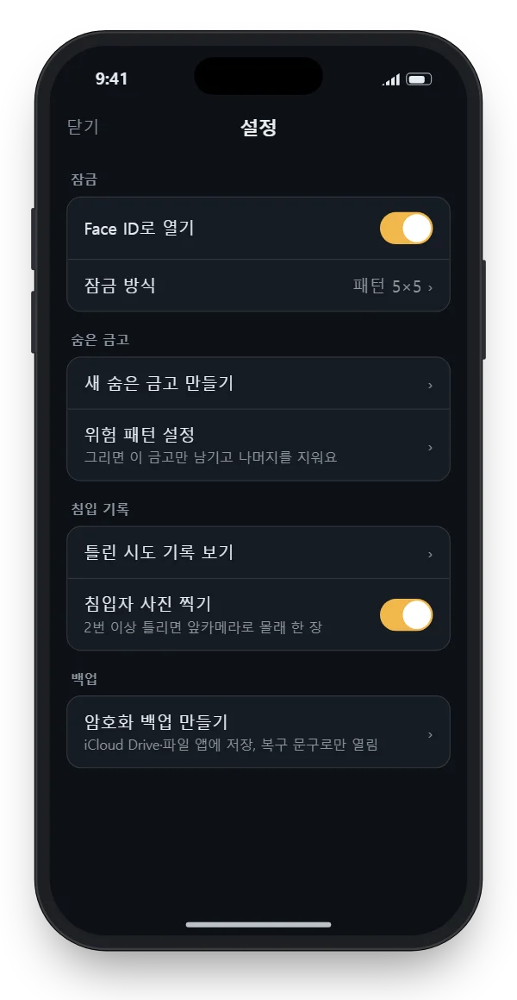

아이폰 앱 잠금 방법, Face ID로 잠그고 숨겨도 드러나는 4곳
폰을 잠깐 건넸는데 상대가 메신저나 사진 앱을 먼저 여는 일은 흔합니다. 앱에 Face ID를 걸어 두면 그 순간을 막을 수 있습니다.
결론부터: iOS 18부터 홈 화면에서 앱 아이콘을 길게 터치하고 Face ID 요구를 두 번 탭하면 그 앱이 잠깁니다. 같은 메뉴에서 가리기 및 Face ID 요구를 고르면 앱이 홈 화면에서 사라지고 앱 보관함의 가려짐 폴더로 들어갑니다. 다만 Face ID가 실패하면 폰 암호로도 열리고, 가린 앱의 이름은 설정 몇 곳에서 계속 보입니다.
1. 아이폰 앱 잠그는 순서 (Face ID 요구)
- 홈 화면에서 잠글 앱을 찾습니다.
- 빠른 동작 메뉴가 열릴 때까지 앱 아이콘을 길게 터치합니다.
- Face ID 요구를 탭합니다. Touch ID 모델은 Touch ID 요구, 둘 다 없으면 암호 요구로 나옵니다.
- 한 번 더 Face ID 요구를 탭하고 Face ID로 인증합니다.
잠근 앱은 열 때마다 인증을 거칩니다. 앱 안의 내용은 알림 미리보기, 검색, Siri 제안, 통화 기록 같은 곳에도 나오지 않습니다. 사진 앱도 이렇게 통째로 잠글 수 있습니다. 잠긴 앱을 한 번 열었다고 잠금이 풀리지는 않습니다. 앱을 종료하면 자동으로 다시 잠기고, 다음에 열 때 또 인증해야 합니다. 잠금을 아예 풀려면 아이콘을 길게 터치하고 Face ID 요구 안 함을 탭한 뒤 인증합니다. 사진 앱 안의 '가려진 항목' 앨범만 따로 잠그는 방법은 아이폰 가려진 항목 잠금, 켜도 열리는 4가지 경우 (Face ID 설정법)에 정리했습니다.
2. 앱을 아예 숨기는 법과 다시 꺼내는 법
- 앱 아이콘을 길게 터치하고 Face ID 요구를 탭합니다.
- 가리기 및 Face ID 요구를 탭하고 인증한 뒤 앱 가리기를 누릅니다.
- 가린 앱을 쓰려면 홈 화면을 왼쪽으로 끝까지 넘겨 앱 보관함을 열고, 맨 아래 가려짐 폴더를 탭해 인증합니다.
- 다시 꺼내려면 가려짐 폴더에서 앱을 길게 터치하고 Face ID 요구 안 함을 탭합니다.
잠금과 가리기는 그 기기에만 적용됩니다. iCloud로 동기화되지 않으니 아이패드를 함께 쓴다면 거기서도 따로 설정해야 합니다.
가리기에는 조건이 있습니다. 처음부터 설치되어 나온 기본 앱은 가릴 수 없고, App Store에서 따로 내려받은 앱만 가릴 수 있습니다. 기본 웹 브라우저로 지정한 앱도 가릴 수 없습니다. 크롬을 기본 브라우저로 쓰면서 크롬을 가리려 했다면 메뉴에 가리기가 나오지 않는 이유가 이것입니다.
3. 잠금, 가리기, 금고 앱은 무엇이 다를까
셋 다 "남이 못 보게" 하는 방법이지만 막는 범위가 다릅니다. 내 상황에 맞는 것을 고르세요.
| 방법 | 홈 화면에서 | 여는 열쇠 | 잘 맞는 경우 |
|---|---|---|---|
| 앱 잠금 | 아이콘 그대로 보임 | Face ID 또는 폰 암호 | 메신저·사진 앱을 잠깐 막고 싶을 때 |
| 가리기 및 잠금 | 아이콘 사라짐, 가려짐 폴더로 이동 | Face ID 또는 폰 암호 | 어떤 앱을 쓰는지도 알리고 싶지 않을 때 |
| 금고 앱(락박스) | 금고 앱 아이콘만 보임 | 폰 암호와 다른 패턴·PIN | 폰 암호를 아는 사람에게도 사진·신분증을 감춰야 할 때 |
핵심은 열쇠입니다. 기본 앱 잠금과 가리기는 모두 폰 암호로 열립니다. 폰을 자주 건네는 상황이라면 건네기 전 점검이 따로 필요합니다. 폰 빌려줄 때 사진 안 보이게 하는 법, 건네기 전 5가지 점검에 순서대로 정리했습니다.
폰 암호와 다른 비밀번호로, 만든 사람도 못 여는 금고.
락박스는 사진과 신분증을 서버에 올리지 않습니다.
4. 잠그고 가려도 드러나는 경우 점검표
애플 안내에 따르면 가린 앱도 아래 4곳에서는 이름이 보입니다.
| 위치 | 보이는 것 |
|---|---|
| 설정 → 앱 → 가려진 앱 | 가린 앱 목록 (인증해야 열림) |
| 설정 → 스크린 타임 | 앱 이름과 사용 시간 |
| 설정 → 배터리 | 앱별 배터리 사용량 |
| App Store 구입 내역 | 내려받은 앱 기록 |
그 밖에 자주 놓치는 것들입니다.
- 폰 암호를 아는 사람: Face ID가 안 되면 폰 암호로 열립니다. 가족이나 연인이 암호를 안다면 잠금은 사실상 없는 셈입니다.
- 잠글 수 없는 앱: 계산기, 카메라, 시계, 연락처, 나의 찾기, 지도, 단축어, 설정은 잠글 수 없습니다. 기본 앱은 가릴 수도 없고, 따로 내려받은 앱만 가릴 수 있습니다.
- 앱 밖의 사본: 메신저를 잠가도 사진 앱에 저장된 대화 사진은 그대로입니다. 사진 정리는 아이폰 사진 숨기기 3가지 방법, 폰 빌려줄 때도 안 들키게를 참고하세요.
- 메모 앱 안의 비밀번호: 메모 앱을 잠가도 폰 암호로 열립니다. 메모 하나하나를 따로 잠그는 법은 아이폰 메모 잠금 방법, 잠가도 새어 나가는 4가지 경우에 정리했습니다.
- 자녀 계정: 가족 공유의 13세 미만 자녀는 앱을 잠그거나 가릴 수 없습니다. 13~17세는 잠그거나 가릴 수 있지만, 부모나 보호자가 앱 다운로드와 사용 시간을 확인할 수 있습니다.
- 앱 지우기로 착각: 가린 앱은 지워진 것이 아닙니다. 앱 안의 데이터와 iCloud에 올라간 사본은 그대로 남습니다.
5. 앱이 아니라 안의 파일을 지켜야 한다면
앱 잠금은 남이 앱을 여는 것을 막는 문입니다. 폰 암호가 열쇠라서, 암호를 아는 사람 앞에서는 문이 열립니다. 사진, 신분증, 비밀번호 메모처럼 꼭 지켜야 하는 것은 폰 암호와 다른 잠금으로 따로 넣어 두는 편이 낫습니다. 락박스는 서버 없이 아이폰 안에서만 AES-256-GCM으로 암호화해 잠급니다. 아무도 못 열어요. 만든 사람도.


잠금은 3×3·5×5 패턴이나 PIN에 Face ID를 더해 씁니다. 숨은 금고와 위험 패턴(Pro)을 쓰면 억지로 열라는 요구를 받아도 진짜 내용을 감출 수 있습니다. 앱을 고를 때 무엇을 봐야 하는지는 사진 금고 앱 추천 전 꼭 볼 것: '만든 회사도 못 여는' 앱 고르는 5가지 기준을 참고하세요. 비밀번호를 잊으면 한글 12단어 복구 문구로만 다시 열 수 있습니다. 무료로 10개까지 넣을 수 있습니다.
앱 잠금으로 부족한 사진과 신분증은 금고에.
폰 암호를 아는 사람도 열 수 없습니다.
자주 묻는 질문
앱 잠금은 몇 버전부터 되나요?
iOS 18부터 됩니다. 그 이전 버전에는 앱마다 Face ID를 거는 기본 기능이 없습니다.
잠글 수 없는 앱도 있나요?
네. 계산기, 카메라, 시계, 연락처, 나의 찾기, 지도, 단축어, 설정은 잠글 수 없습니다.
아이폰에서 잠근 앱이 아이패드에서도 잠기나요?
아니요. 잠금과 가리기는 그 기기에만 적용되고 iCloud로 동기화되지 않습니다.
가린 앱 목록은 어디서 보나요?
설정 앱에서 앱을 탭한 다음 가려진 앱을 탭하면 보입니다. 목록을 열 때도 Face ID나 암호 인증을 거칩니다.